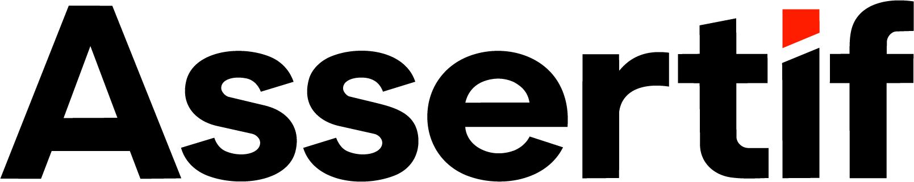

20 dígitos. O tribunal é identificado automaticamente.
Selecione o tribunal e ao menos um filtro. A busca por nome de parte não é permitida.

Consulta Processual PúblicaConsulta pública aos dados processuais disponibilizados pela Base Nacional de Dados do Poder Judiciário (Datajud), conforme a Portaria CNJ nº 160/2020. Processos sigilosos e dados das partes são preservados.